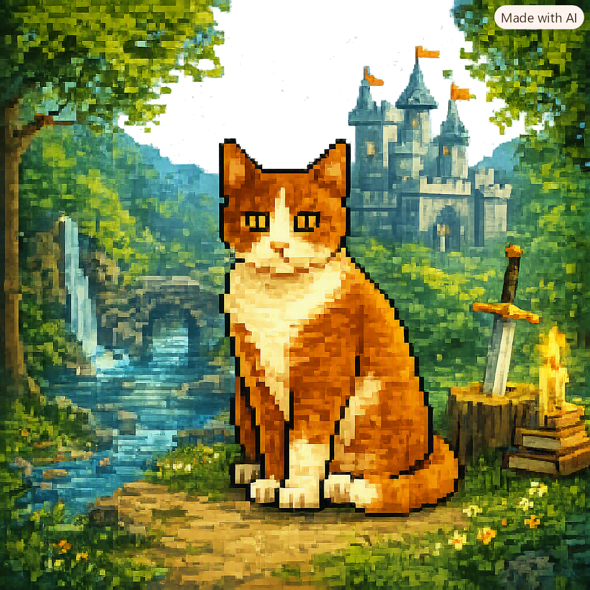

Meu primeiro post Por: Kauan Marques Boas-vindas ao meu novo blog! Aqui vou compartilhar dicas de programação e curiosidades da área de tecnologia. 👍🏻0 🇧🇷0 Para configurar o contraste de cor entre o fundo e as cores, acesse Color Contrast Checker
 tipos de gato raças de gato - SNES 1ºgato cinza e branco - SNES 2º gato preto e laranja- SNES 3º gato cinza - SNES 👍🏻0 🇧🇷0